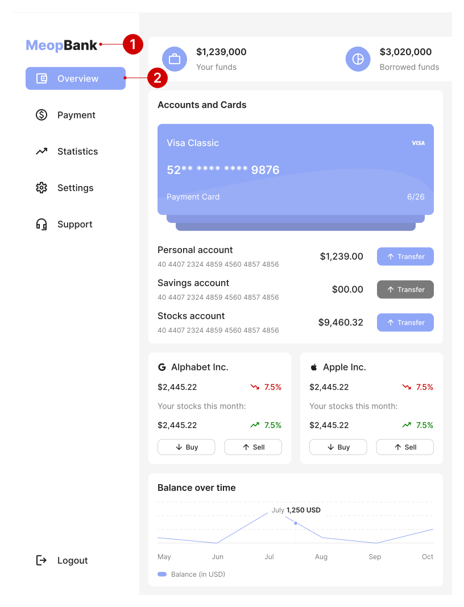
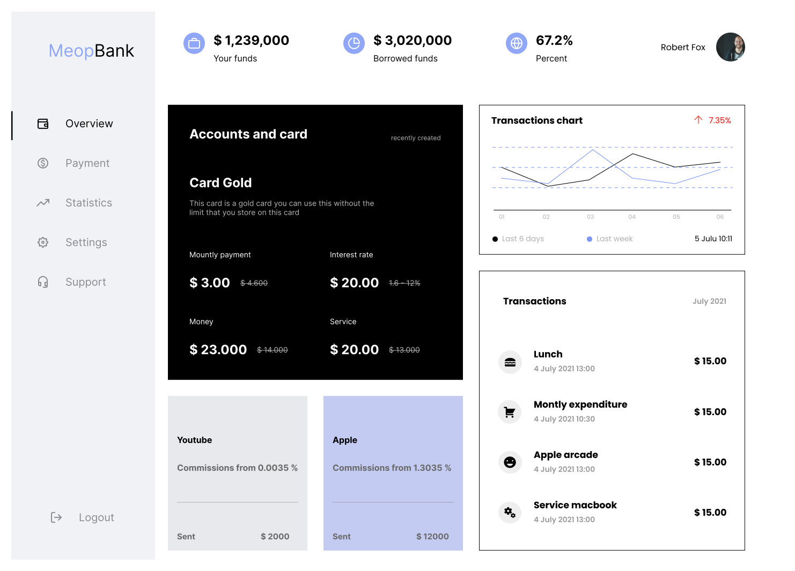
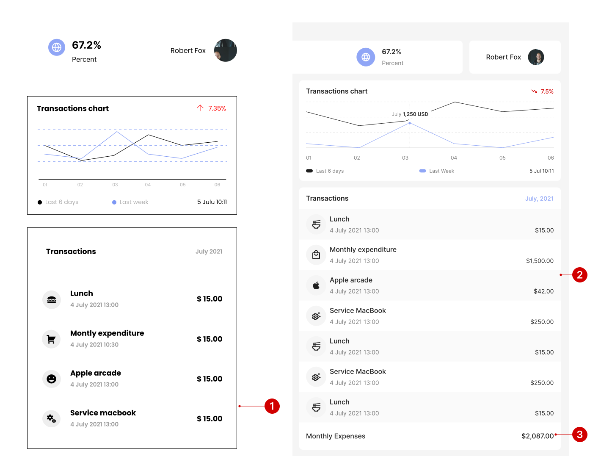

About
I am leading a project to improve and optimize an existing web
application dashboard designed for banking experiences. The initial
design was created by a UX designer, and my role is to refine and
enhance the overall user experience.

Problems
The current design of the dashboard makes it difficult for users to
find the information they need.
- 1. Difficulty finding information: When the colors on a dashboard are not well-balanced, it can make it difficult for users to scan the page and find the information they need.
- 2. Visual discomfort: Poor color balance can also cause visual discomfort for users, which can lead to them leaving the dashboard sooner.
- 3. Accessibility issues: Users with vision impairments may have difficulty reading text or distinguishing between different elements on the page if the color balance is poor.
Color Improvement
The current design has messy colors that make things look chaotic,
and it's hard for users. Fixing the colors will make it look better
and be easier for users.

Color fixed with 60 - 30 - 10 rules
I used the 60-30-10 color rule in my redesign, making the platform
look much better. This rule creates a balanced and pleasing color
scheme, improving user-friendliness and navigation.
Layout inconsistently
The inconsistent content cards on the dashboard cause problems for
users. They struggle to find information quickly, and the messy
design can be visually uncomfortable, leading to users leaving
sooner and reduced engagement, resulting in lower traffic and
conversions.

Fixed layout inconsistently
I'll enhance the user experience by standardizing the content cards'
style and removing unnecessary empty spaces. This will create a
cohesive, organized, and visually appealing platform, making
navigation and information retrieval quicker and simpler for users.

Split view
Let's split the view to focus on the details more effectively.

To enhance the dashboard's navigation bar, I ensure consistent
spacing and alignment for menu items, maintain a uniform font size
for all tabs (including the active one), and select high-contrast
colors for improved legibility of inactive tabs.

After aligning and enhancing contrast, I also improved the service
logo to better fit the overall design changes, resulting in a more
cohesive and user-friendly interface.

Let's make the card layout more useful
To enhance the user experience, consider these improvements for the
element:
- 1. Rename it to something specific and descriptive, like "Account Management" or "Payment Methods," for clarity.
- 2. Relocate the element to a more logical position, such as the main navigation bar or a dedicated account management page, improving accessibility.
- 3. Revamp the design with distinct colors, fonts, and images to make it visually appealing and engaging, ensuring it stands out from the rest of the page.

After making the card layout more useful
These changes have led to a more user-friendly design for the
section, offering several advantages:
- 1. Increased informativeness: The inclusion of card images and additional information helps users understand the section's purpose and what to find there.
- 2. Enhanced visual appeal: A unified color palette and style make the section more attractive and scannable.
- 3. Improved consistency: Consistent content card design facilitates information retrieval and clarifies the section's relationship to the overall dashboard.

Try to emphasize how it may work in real life
These changes have enhanced the section's cohesiveness and
user-friendliness, with several benefits:
- 1. Enhanced consistency and functionality for stock cards.
- 2. Improved usability by populating the cards with user portfolio data and offering quick actions.
- 3. Added a feature for users to customize their dashboard content through the app's settings, enhancing personalization and flexibility.

Take into account the real-world context and functionality of your
design. This helps ensure authentic content and prevents it from
feeling artificial.

Improving minor details
When dealing with numbers in various currencies, it's vital to
respect specific formatting rules, such as no space between the
currency symbol and the value, and using commas and dots correctly.
I've incorporated these details in my redesign.

Improving the next part of the design
Let's move on to the next section of the design. Once again, I
prioritized consistency in the style of content cards and ensured
proper alignment of elements within them.

Removing unnecessary white space
Besides unifying the content card style and aligning the elements, I
also improved the colors and sizes, creating a more user-friendly
experience. By addressing unnecessary white space, I added two extra
elements and a monthly transaction summary, making the section more
informative for potential users.

I got a chance to add more information -
As part of the design, I had ample space, which allowed me to
display more information to the users.

Learning
In design, minor details can enhance the user experience and make
the design more modern and valuable.